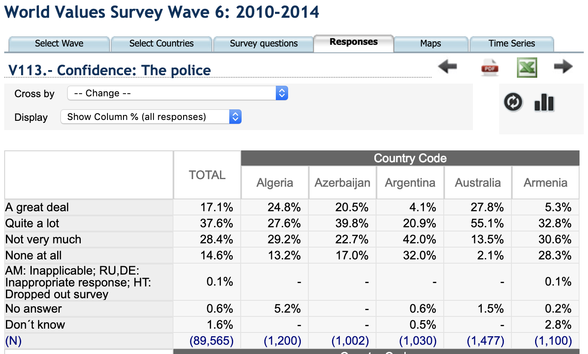
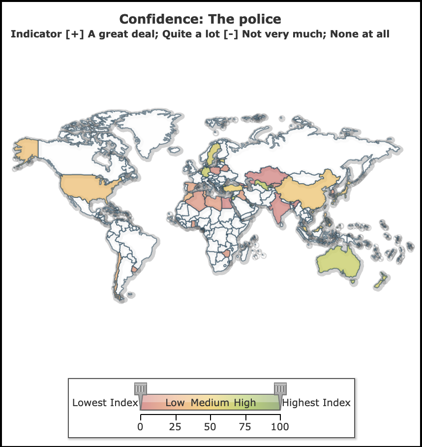
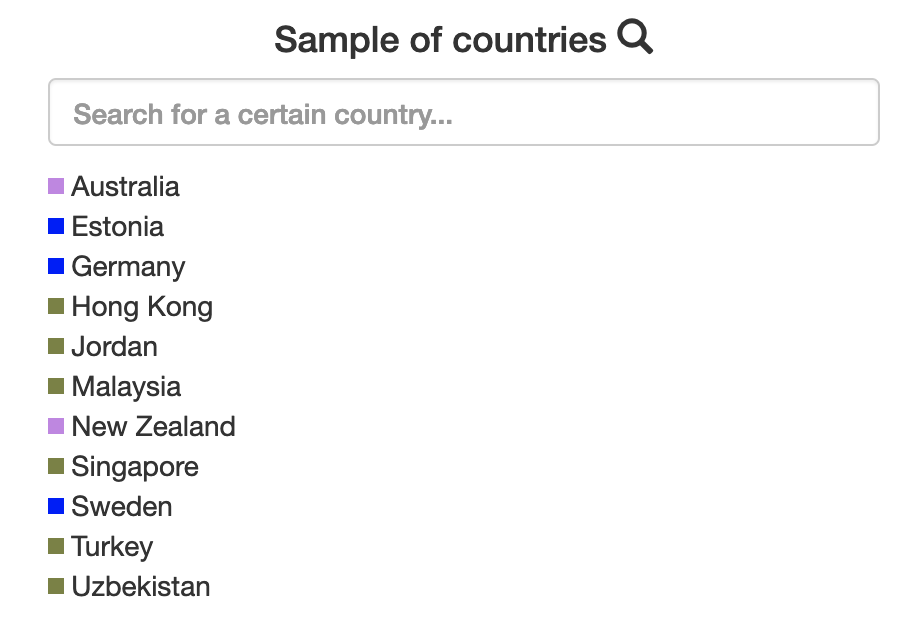
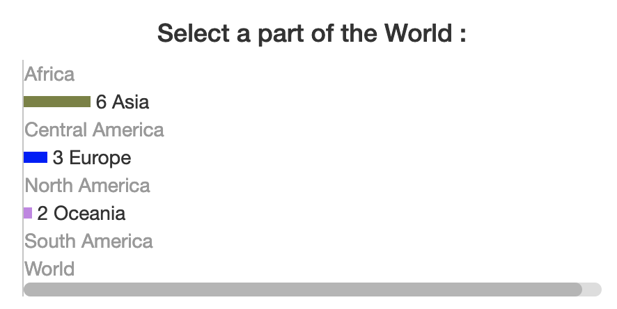

DH 2321 : Project 2 Visualizing the World Through its Own Worldview
Trust of citizens to their institutions
/
Lines at opacity.
This visualization was made for a project in DH2321 at KTH. The main goal was to make some discovery process by using the data available on the following website : http://www.worldvaluessurvey.org/WVSOnline.jsp.
This website contains different surveys made in several countries. This visualization was made to understand them and find "trends".
Here, we only focus on the trust of the citizens into several institutions : Armed Forces, Churches, Government...
The parallel coordinates displays the percentage of agreement of the citizens for different countries and different institutions.
Each color represent a part of the world that are supposed to have a common culture.
In order to make a simple model, the part of the world can be considered as continents.
The goal here is to make a discovery process.
In order to do that, you can select the data by continents or by searching the name of the country that you're interested in.
You can also brush the data by selecting the value you want for a certain institution.
In order to that, I've downloaded the data for all the possible countries of the WVS website for four different waves. I've downloaded the CSV for 8 surveys and merged them into a big one.
I've changed the dataset by merging the labels "A great deal" and "Quite a lot" and putting them as "I trust this institution"
I've also added a label "continent" which give you the part of the world of the different countries in order to make it easier to do discovery processes.
Finally, I've used the parallel coordinate visualization.
Brush: Drag vertically along an axis.
Remove Brush: Tap the axis background.
Reorder Axes: Drag a label horizontally.
Invert Axis: Tap an axis label.
Remove Axis: Drag axis label to the left edge.
Adapted from examples by
Mike Bostock and Jason Davies
The different datasets used here were downloaded on :
http://www.worldvaluessurvey.org/WVSOnline.jsp.
For this assignment, I've learned how to make some python scripts in order to merge some datasets, compute values and make averages.
I've also learned how to improve my skills in d3.js,specially the script for parallel coordinates that I had already used for the first project.
Finally, I've learned the existence of WVS and how to make interesting discovery processes with that kind of surveys.
The goal here is to make a discovery process.
Since i'm interested into social issues, one can wonder if it depends on your culture and the "part of the world" where you live. In order to see that, I've decided to study the confidence of citizens towards different "institutions", for instance their Government, the Police etc.
In order to do that, I've selected every country available for each wave of the WVS dataset.
Here, in order make a simple example, we will just focus into the wave of 2010-2014 for the confidence of citizens toward their Police.
The first visualization was the following :

The problem of this visualization is that the information is really messy, it's difficult to compare figures for different countries.
We can't see "trends". For instance, one could think that Europe will have more confidence into their Police than South America.
That's why I've decided to switch to second type of visualization, the map visualization :

Here we can clearly see trends, it seems that the countries in Africa or South America doesn't have confidence to their Police.
The problem with this visualization is that we can only do it for one survey and one wave.
We could do that for each wave to see if this is a real trend or just something temporary.
Moreover, we could do that for several surveys.
In order to do that, we will rather use my own visualization which seems easier.
The goal here is to use the same dataset but with a different visualization.
Here, instead of using a map or a table, we will use parallel coordinate which are really usefull to visualize different variables. This could help us to look at different institutions to make more complete disvory processes.
In order to do that, I've selected every country available for each wave of the WVS dataset, for 4 waves, from 1995 to 2014.
You can change the different datasets by clicking on the button with the wanted period.
Here, in order to compare it with the WVS visualization, we will also just focus into the confidence of citizens toward their Police even if with this visualization we could do more than that.
Here, we brushed the countries that have best confidence into their Police for the wave 2010-2014:
Here we can clearly see the countries and continents that are selected :


Here we can clearly see trends, there are only countries from Europe, Asia and Oceania that strongly have confidence into the Police.
We could do that for each wave to see if this is a real trend or just something temporary.
Here, for instance, we did it for the wave 2005-2009 and selected only countries from Europe, Oceania and Asia :
Here we can see that the discovery process that we have made before wasn't an absolute truth. In fact here, we can see European countries that have no trust in their police.
Moreover, we can also see that there are still many European countries that have confidence into their Police.